Minimax 演算法
Minimax 演算法0. recursion 遞歸1. 為遊戲加入打和2. 加入random AI跟玩家對玩3. 加入dummy AI4. 加入minimax演算法5. 令AI懂得阻擋我方6. 既能阻擋我方，又懂得贏7. 令分數與depth成關係
0. recursion 遞歸
Fibonacci sequence(費波那契數)是一個常見用來解釋recursion遞歸概念的數列。定義上，
用文字來說，就是斐波那契數列由0和1開始，之後的費波那契數就是由之前的兩數相加而得出。首幾個費波那契數是：
1、 1、 2、 3、 5、 8、 13、 21、 34、 55、 89、 144、 233、 377、 610、 987……
1def setup():2 for i in range(1,10):3 print(Fibonacci(i))4 exit()5 6def Fibonacci(n):7 if n == 0:8 return 09 if n == 1:10 return 111 if n >=2:12 return Fibonacci(n-1)+Fibonacci(n-2)得出結果:
xxxxxxxxxx9112132435568713821934
這個在函數之中call自己的方法叫做遞歸recursion，遞歸在程式中非常常用，但不一定時好方法。
以上述的斐波那契數列為例，
xxxxxxxxxx51def setup():2 timer = millis()3 print(Fibonacci(10))4 print(millis()-timer)5 exit()計算
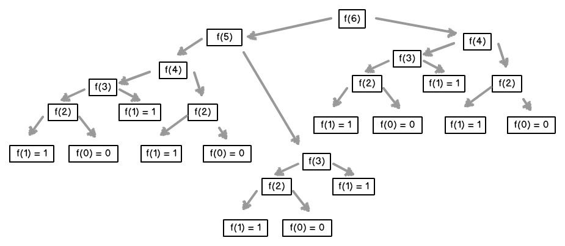
1. 為遊戲加入打和
connectFour_AI.pyde:
x1from spot import *2from gameBoard import *3
4gameBoard = 05
6def setup():7 global grids, gameBoard8
9 size(700, 600)10 ellipseMode(CENTER)11 frameRate(10)12 gameBoard = GameBoard()13
14def draw():15 background(200)16 gameBoard.display() 17
18def mousePressed():19 global gameBoard20 for i in range(7):21 if (mouseX > width/7*i and mouseX < width/7*(i+1)):22 gameBoard.trigger(i)gameBoard.py:
xxxxxxxxxx901from spot import *2
3class GameBoard(object):4
5 def __init__(self):6 self.grids = []7 for i in range(6):8 temp = []9 for j in range(7):10 temp.append(Spot(i, j, width/7*(j+.5), height/6*(i+.5), ''))11 self.grids.append(temp)12 self.currentRow = 013 self.currentCol = 014 self.colHeight = [0, 0, 0, 0, 0, 0, 0]15 self.currentPlayer = 'R'16 self.gameOver = False17 self.winner = None18
19 def display(self):20 for i in range(6):21 for j in range(7):22 self.grids[i][j].display()23 if self.gameOver == True: 24 textAlign(CENTER, CENTER)25 textSize(100)26 fill('#0000FF')27 if self.winner == 'R':28 text('YOU WIN!!!!', width/2, height/2)29 elif self.winner == 'Y':30 text('GAME OVER', width/2, height/2)31 elif self.winner == 'O':32 text('TIE', width/2, height/2)33 34 def swapPlayer(self):35 if self.currentPlayer == 'R':36 self.currentPlayer = 'Y'37 elif self.currentPlayer == 'Y':38 self.currentPlayer = 'R'39
40 def trigger(self, i):41 if self.gameOver == False:42 if self.colHeight[i] < 6:43 self.colHeight[i] += 144 self.currentCol = i45 self.currentRow = 6 - self.colHeight[i]46 self.grids[self.currentRow][self.currentCol].value = self.currentPlayer47 self.winner = self.checkWin()48 if self.winner != None:49 self.gameOver = True50 return51 self.swapPlayer()52 53 def checkWin(self):54 gs = self.grids55
56 # check horizontal57 for i in range(6):58 for j in range(4):59 if gs[i][j].value == gs[i][j+1].value == gs[i][j+2].value == gs[i][j+3].value\60 and gs[i][j].value != '':61 return gs[i][j].value62
63 # check vertical64 for i in range(3):65 for j in range(7):66 if gs[i][j].value == gs[i+1][j].value == gs[i+2][j].value == gs[i+3][j].value\67 and gs[i][j].value != '':68 return gs[i][j].value69
70 # check right cross71 for i in range(3):72 for j in range(4):73 if gs[i][j].value == gs[i+1][j+1].value == gs[i+2][j+2].value == gs[i+3][j+3].value\74 and gs[i][j].value != '':75 return gs[i][j].value76
77 # check left cross78 for i in range(3):79 for j in range(3, 7):80 if gs[i][j].value == gs[i+1][j-1].value == gs[i+2][j-2].value == gs[i+3][j-3].value\81 and gs[i][j].value != '':82 return gs[i][j].value83 84 # if all the grids are filled, the game is tie85 isAllNull = False86 for i in range(6):87 for j in range(7):88 isAllNull = isAllNull or gs[i][j].value == ''89 if isAllNull == False:90 return 'O'spot.py:
xxxxxxxxxx211class Spot(object):2 def __init__(self, _i, _j, _x, _y, _value):3 self.i = _i4 self.j = _j5 self.x = _x6 self.y = _y7 self.value = ''8
9 def display(self):10 stroke('#000000')11 strokeWeight(2)12 fill(self.matchColor(self.value))13 ellipse(self.x, self.y, 80, 80)14
15 def matchColor(self, _value):16 if _value == '':17 return '#FFFFFF'18 elif _value == 'R':19 return '#FF5641'20 elif _value == 'Y':21 return '#FFDF37' 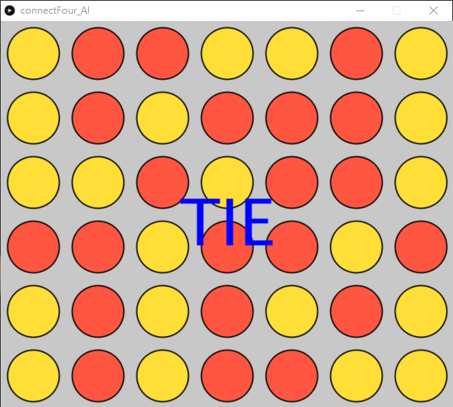
首先在gameBoard.py的class中，
xxxxxxxxxx111 def checkWin(self):2 gs = self.grids3 #other cods4 5 # if all the grids are filled, the game is tie6 isAllNull = False7 for i in range(6):8 for j in range(7):9 isAllNull = isAllNull or gs[i][j].value == ''10 if isAllNull == False:11 return 'O'在checkWin()的最後加入isAllNull = False，之後對每一個格都做or運算，只要其中一個格是沒有填的話，isAllNull都會變成True，只有在全部都填滿下，isAllNull才會運算完42次後都是False，如果是False的話，即全部格已滿，所以就是打和了。
xxxxxxxxxx81def display(self):2 #other cods3 if self.winner == 'R':4 text('YOU WIN!!!!', width/2, height/2)5 elif self.winner == 'Y':6 text('GAME OVER', width/2, height/2)7 elif self.winner == 'O':8 text('TIE', width/2, height/2)之後同樣是在gameBoard.py中，如果self.winner == 'O'，即遊戲打和，則在顯示中加入打和。
2. 加入random AI跟玩家對玩
connectFour_AI.pyde:
xxxxxxxxxx281from spot import *2from gameBoard import *3
4gameBoard = 05
6
7def setup():8 global grids, gameBoard9
10 size(700, 600)11 ellipseMode(CENTER)12 frameRate(10)13
14 gameBoard = GameBoard()15
16
17def draw():18 background(200)19 gameBoard.display()20 21
22def mousePressed():23 global gameBoard24 for i in range(7):25 if (mouseX > width/7*i and mouseX < width/7*(i+1)):26 gameBoard.trigger(i)27 if gameBoard.currentPlayer == 'Y':28 gameBoard.brain.autoPlay()gameBoard.py
xxxxxxxxxx951from spot import *2from AIBrain import *3
4class GameBoard(object):5
6 def __init__(self):7 self.grids = []8 for i in range(6):9 temp = []10 for j in range(7):11 temp.append(Spot(i, j, width/7*(j+.5), height/6*(i+.5), ''))12 self.grids.append(temp)13
14 self.currentRow = 015 self.currentCol = 016 self.colHeight = [0, 0, 0, 0, 0, 0, 0]17 self.currentPlayer = 'R'18 self.gameOver = False19 self.winner = None20 self.brain = aiBrain(self)21
22 def display(self):23 for i in range(6):24 for j in range(7):25 self.grids[i][j].display()26 if self.gameOver == True: 27 textAlign(CENTER, CENTER)28 textSize(100)29 fill('#0000FF')30 if self.winner == 'R':31 text('YOU WIN!!!!', width/2, height/2)32 elif self.winner == 'Y':33 text('GAME OVER', width/2, height/2)34 elif self.winner == 'O':35 text('TIE', width/2, height/2)36 37
38 def swapPlayer(self):39 if self.currentPlayer == 'R':40 self.currentPlayer = 'Y'41 elif self.currentPlayer == 'Y':42 self.currentPlayer = 'R'43
44 def trigger(self, i):45 if self.gameOver == False:46 if self.colHeight[i] < 6:47 self.colHeight[i] += 148 self.currentCol = i49 self.currentRow = 6 - self.colHeight[i]50 self.grids[self.currentRow][self.currentCol].value = self.currentPlayer51 self.winner = self.checkWin()52 if self.winner != None:53 self.gameOver = True54 return55 self.swapPlayer()56 57
58 def checkWin(self):59 gs = self.grids60
61 # check horizontal62 for i in range(6):63 for j in range(4):64 if gs[i][j].value == gs[i][j+1].value == gs[i][j+2].value == gs[i][j+3].value\65 and gs[i][j].value != '':66 return gs[i][j].value67
68 # check vertical69 for i in range(3):70 for j in range(7):71 if gs[i][j].value == gs[i+1][j].value == gs[i+2][j].value == gs[i+3][j].value\72 and gs[i][j].value != '':73 return gs[i][j].value74
75 # check right cross76 for i in range(3):77 for j in range(4):78 if gs[i][j].value == gs[i+1][j+1].value == gs[i+2][j+2].value == gs[i+3][j+3].value\79 and gs[i][j].value != '':80 return gs[i][j].value81
82 # check left cross83 for i in range(3):84 for j in range(3, 7):85 if gs[i][j].value == gs[i+1][j-1].value == gs[i+2][j-2].value == gs[i+3][j-3].value\86 and gs[i][j].value != '':87 return gs[i][j].value88 89 # if all the grids are filled, the game is tie90 isAllNull = False91 for i in range(6):92 for j in range(7):93 isAllNull = isAllNull or gs[i][j].value == ''94 if isAllNull == False:95 return 'O'AIBrain.py:
xxxxxxxxxx291import copy2import random3
4
5class aiBrain(object):6
7 def __init__(self, _gameBoard):8 self.gameBoard = _gameBoard9
10 def autoPlay(self):11 bestScore = float('-inf')12
13 # fill the available colume to an list14 availableCol = []15 for j in range(7):16 if self.gameBoard.grids[0][j].value == '':17 availableCol.append(j)18 # shuffle the list19 random.shuffle(availableCol)20
21 for move in availableCol:22 score = self.minimax(self.gameBoard, 4, False)23 if (score > bestScore):24 bestScore = score25 bestMove = move26 self.gameBoard.trigger(bestMove)27
28 def minimax(self, _gameBoard, _depth, _isMaximizing):29 return 1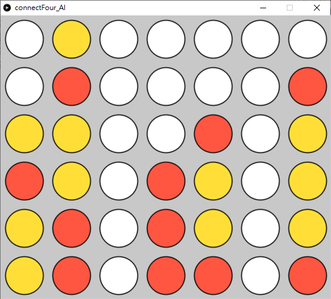
加入一個叫AIBrain.py的檔案，這個檔案一開始先做一點簡單的測試。在初始化時，匯入現有的gameBoard
xxxxxxxxxx41class aiBrain(object):2
3 def __init__(self, _gameBoard):4 self.gameBoard = _gameBoard之後，
xxxxxxxxxx201 def autoPlay(self):2 bestScore = float('-inf')3
4 # //fill the available colume to an list5 availableCol = []6 for j in range(7):7 if self.gameBoard.grids[0][j].value == '':8 availableCol.append(j)9 # shuffle the list10 random.shuffle(availableCol)11
12 for move in availableCol:13 score = self.minimax(self.gameBoard, 4, False)14 if (score > bestScore):15 bestScore = score16 bestMove = move17 self.gameBoard.trigger(bestMove)18
19 def minimax(self, _gameBoard, _depth, _isMaximizing):20 return 1我們要為下一步所有可能的步數去計分，才知那一個才對AI方最有利。
我們設定玩家方為正分，AI方為負分數，所以每一步越是負得多，即對AI方是最有利的。
一開始設定bestScore = float('-inf')，就是負無限大。
將一個叫availableCol = []去裝起所有可能的下一步，這7個欄之中，如果if self.gameBoard.grids[0][j].value == '':即最上一格為空，即可以填入，所以就將其append到availableCol。
下一步是shuffle即調亂整個列，如果分數是相同的話，則最後結果會有亂數，不會每次都是由左至右。
之後每一個可能的落祺步，都加入一個叫minimax()的演算法去幫這一步計分，分數最大的步就是最佳答案，於是我們便落子這一步。但現階段我們的minimax()演算法暫時甚麼都沒有，全部回傳的分數都是1，我們先試一試這個思路是否行得通。
3. 加入dummy AI
AIBrain.py:
xxxxxxxxxx451import copy2import random3
4
5class aiBrain(object):6
7 def __init__(self, _gameBoard):8 self.gameBoard = _gameBoard9
10 def autoPlay(self):11 bestScore = float('-inf')12 bestMove = random.randint(0, 5) # the range is a, b+113
14 # //fill the available colume to an list15 availableCol = []16 for j in range(7):17 if self.gameBoard.grids[0][j].value == '':18 availableCol.append(j)19 # shuffle the list20 random.shuffle(availableCol)21
22 for move in availableCol:23 possibleBoard = copy.deepcopy(self.gameBoard)24 possibleBoard.trigger(move)25 score = self.minimax(possibleBoard, 4, False)26 print(move, score)27 if (score > bestScore):28 bestScore = score29 bestMove = move30 print(bestMove)31 print('')32 self.gameBoard.trigger(bestMove)33
34 def score(self, _winner):35 if _winner == 'R':36 return 1037 elif _winner == 'Y':38 return -1039 elif _winner == 'O':40 return 041
42 def minimax(self, _gameBoard, _depth, _isMaximizing):43 winner = _gameBoard.checkWin()44 if winner != None:45 return self.score(winner)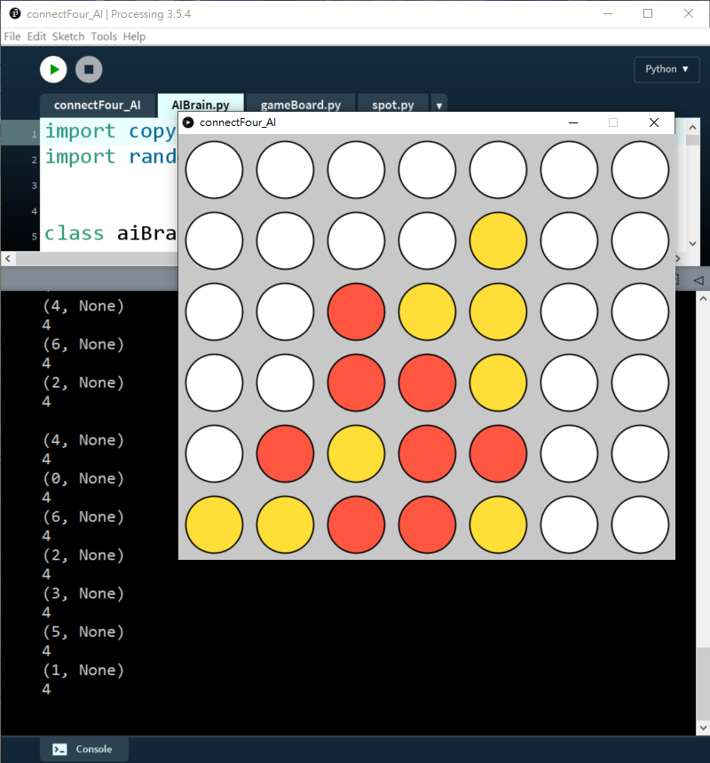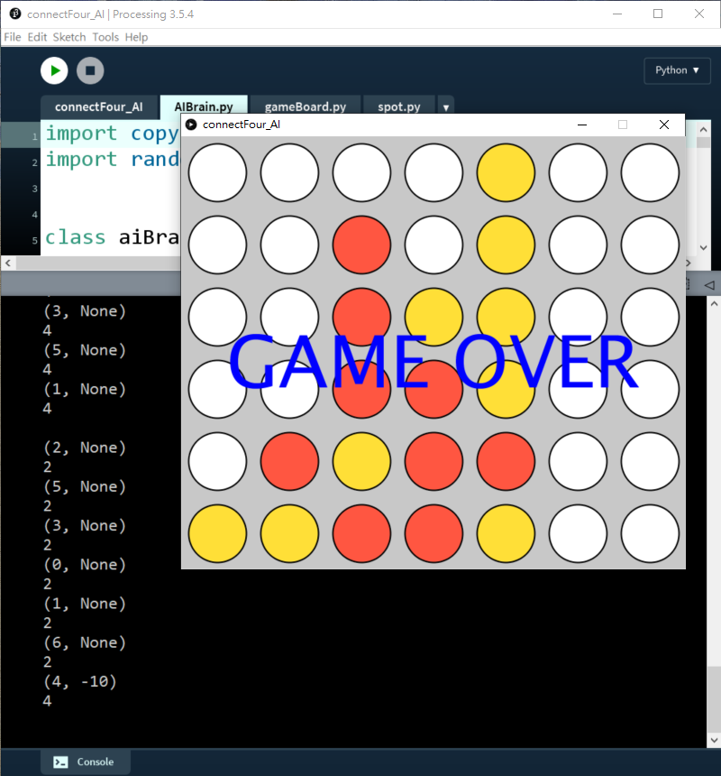
在AIBrain.py中，
xxxxxxxxxx111 for move in availableCol:2 possibleBoard = copy.deepcopy(self.gameBoard)3 possibleBoard.trigger(move)4 score = self.minimax(possibleBoard, 4, False)5 print(move, score)6 if (score > bestScore):7 bestScore = score8 bestMove = move9 print(bestMove)10 print('')11 self.gameBoard.trigger(bestMove)我們用copy.deepcopy()去將整個gameboard複製。Python和其他高級語言一樣，如果只用=去複製一個class的話，只會複製其id，之後修改這個class的話，被複製的和複製後的class都會改變，所以要用copy.deepcopy()去將整個gameboard完全複製。
之後就將當前這一步落子到複製出來的possibleBoard，接著就將這個gameboard放到minimax演算法中提出最佳答案。
xxxxxxxxxx41 def minimax(self, _gameBoard, _depth, _isMaximizing):2 winner = _gameBoard.checkWin()3 if winner != None:4 return self.score(winner)上一步我們的minimax演算法只會回傳1分出來，甚麼功能也沒有的。這一步我們幫輸入的gameboard檢查一下有否贏、輸或打和，分別根據這3個情況打分如下:
xxxxxxxxxx71 def score(self, _winner):2 if _winner == 'R':3 return 104 elif _winner == 'Y':5 return -106 elif _winner == 'O':7 return 0贏出的話就打10分，輸就是-10分，打和就是0分。
由於設定了bestScore最開始時是負無限大，所以即使AI(黃色棋子)輸出的話是-10分，也依然大於負無限大，所以這個dummy AI都會落子，但只限於此。這個AI唯一的功能是如果下一步AI會贏，而玩家又沒有阻擋的話，AI就會懂得落子去贏出遊戲，但這個AI既不懂阻擋玩家，更不會佈局的。
4. 加入minimax演算法
xxxxxxxxxx791import copy2import random3
4
5class aiBrain(object):6
7 def __init__(self, _gameBoard):8 self.gameBoard = _gameBoard9
10 def autoPlay(self):11 bestScore = float('-inf')12 bestMove = random.randint(0, 5) # the range is a, b+113
14 # //fill the available colume to an list15 availableCol = []16 for j in range(7):17 if self.gameBoard.grids[0][j].value == '':18 availableCol.append(j)19 # shuffle the list20 random.shuffle(availableCol)21
22 for move in availableCol:23 possibleBoard = copy.deepcopy(self.gameBoard)24 possibleBoard.trigger(move)25 score = self.minimax(possibleBoard, 1, False)26 print(move, score)27 if (score > bestScore):28 bestScore = score29 bestMove = move30 print(bestMove)31 print('')32 self.gameBoard.trigger(bestMove)33
34 def score(self, _winner):35 if _winner == 'R':36 return 1037 elif _winner == 'Y':38 return -1039 elif _winner == 'O':40 return 041
42 def minimax(self, _gameBoard, _depth, _isMaximizing):43 winner = _gameBoard.checkWin()44 if winner != None or _depth == 0:45 return self.score(winner)46
47 if _isMaximizing:48 bestScore = float('-inf')49 # //fill the available colume to an list50 availableCol = []51 for j in range(7):52 if _gameBoard.grids[0][j].value == '':53 availableCol.append(j)54 # shuffle the list55 random.shuffle(availableCol)56
57 for move in availableCol:58 possibleBoard = copy.deepcopy(_gameBoard)59 possibleBoard.trigger(move)60 score = self.minimax(possibleBoard, _depth - 1, False)61 bestScore = max(score, bestScore)62 return bestScore63
64 else:65 bestScore = float('inf')66 # //fill the available colume to an list67 availableCol = []68 for j in range(7):69 if _gameBoard.grids[0][j].value == '':70 availableCol.append(j)71 # shuffle the list72 random.shuffle(availableCol)73
74 for move in availableCol:75 possibleBoard = copy.deepcopy(_gameBoard)76 possibleBoard.trigger(move)77 score = self.minimax(possibleBoard, _depth - 1, True)78 bestScore = min(score, bestScore)79 return bestScore測試depth = 1:
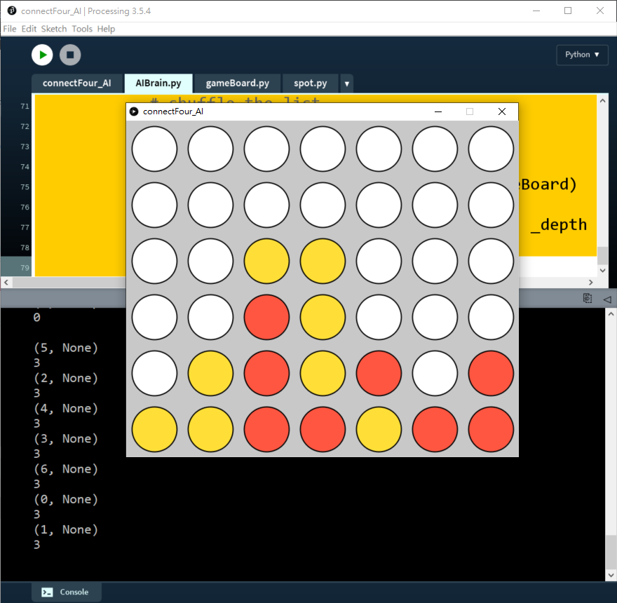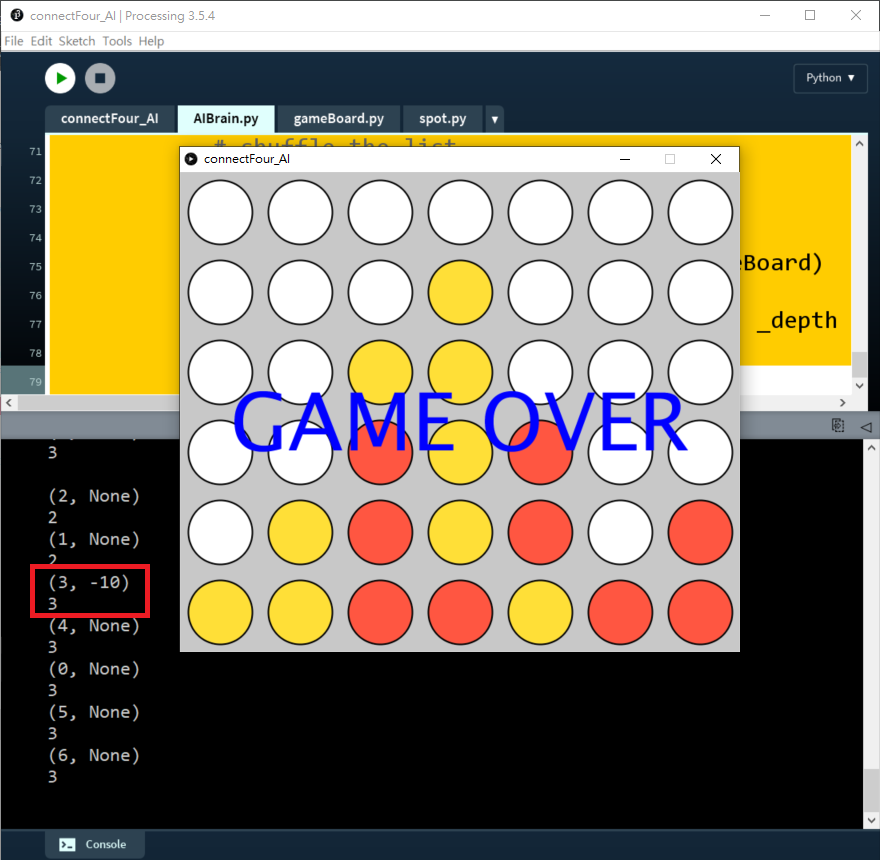
測試depth = 2:
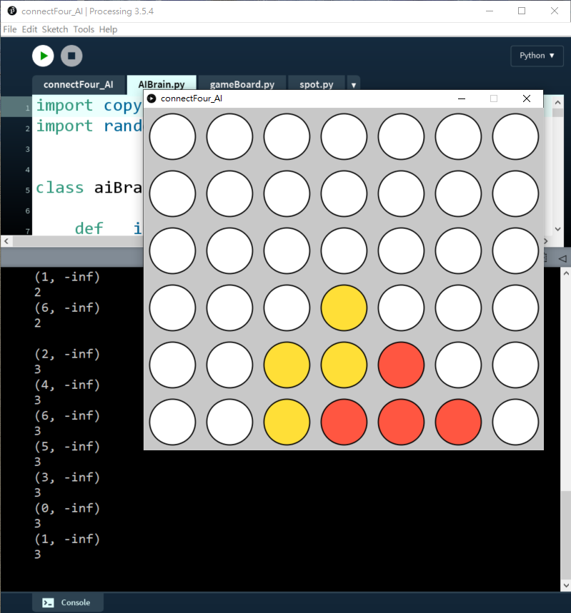
效果：即使depth再增加，AI都只會懂得幫自己提早抬轎，而不懂阻擋我。
xxxxxxxxxx381 def minimax(self, _gameBoard, _depth, _isMaximizing):2 winner = _gameBoard.checkWin()3 if winner != None or _depth == 0:4 return self.score(winner)5
6 if _isMaximizing:7 bestScore = float('-inf')8 # //fill the available colume to an list9 availableCol = []10 for j in range(7):11 if _gameBoard.grids[0][j].value == '':12 availableCol.append(j)13 # shuffle the list14 random.shuffle(availableCol)15
16 for move in availableCol:17 possibleBoard = copy.deepcopy(_gameBoard)18 possibleBoard.trigger(move)19 score = self.minimax(possibleBoard, _depth - 1, False)20 bestScore = max(score, bestScore)21 return bestScore22
23 else:24 bestScore = float('inf')25 # //fill the available colume to an list26 availableCol = []27 for j in range(7):28 if _gameBoard.grids[0][j].value == '':29 availableCol.append(j)30 # shuffle the list31 random.shuffle(availableCol)32
33 for move in availableCol:34 possibleBoard = copy.deepcopy(_gameBoard)35 possibleBoard.trigger(move)36 score = self.minimax(possibleBoard, _depth - 1, True)37 bestScore = min(score, bestScore)38 return bestScoreMinimax演算法基本上就是將所有可能的落子造成一個tree diagram，而每一層的tree diagram，跟據玩家的交換，一層的分數需要最少化，下一層的分數需要最大化，如此類推，詳細可以看看上面的影片。
xxxxxxxxxx41 def minimax(self, _gameBoard, _depth, _isMaximizing):2 winner = _gameBoard.checkWin()3 if winner != None or _depth == 0:4 return self.score(winner)一開始，跟之前一樣，首先檢查有沒有贏、輸或打和，如果這一落子有的話，就可以即時回傳分數。另一個回傳跳出這個minimax()函數的情況是depth==0到底了，這樣回傳的話由於沒有贏家，會回傳None。
xxxxxxxxxx161if _isMaximizing:2 bestScore = float('-inf')3 # //fill the available colume to an list4 availableCol = []5 for j in range(7):6 if _gameBoard.grids[0][j].value == '':7 availableCol.append(j)8 # shuffle the list9 random.shuffle(availableCol)10
11 for move in availableCol:12 possibleBoard = copy.deepcopy(_gameBoard)13 possibleBoard.trigger(move)14 score = self.minimax(possibleBoard, _depth - 1, False)15 bestScore = max(score, bestScore)16 return bestScore之後這一段就跟上面非常相似了，如果是最大化的case，就將bestScore設定成負無限大，接著便deepcopy一個新的gameboard，將所有可能的步都試行一次，比較特別的是，這次score = self.minimax(possibleBoard, _depth - 1, False)minimax函數我們將函數輸入的_depth減1，函數最後的False是指_isMaximizing，所以如果這次_isMaximizing是True，那下一步就設定成False。
xxxxxxxxxx161 else:2 bestScore = float('inf')3 # //fill the available colume to an list4 availableCol = []5 for j in range(7):6 if _gameBoard.grids[0][j].value == '':7 availableCol.append(j)8 # shuffle the list9 random.shuffle(availableCol)10
11 for move in availableCol:12 possibleBoard = copy.deepcopy(_gameBoard)13 possibleBoard.trigger(move)14 score = self.minimax(possibleBoard, _depth - 1, True)15 bestScore = min(score, bestScore)16 return bestScore程式的下半部分基本上同，不同的是一開始的bestScore設定成正無限大，而score = self.minimax(possibleBoard, _depth - 1, True)也將最後的_isMaximizing部分設定成True。
這裡minimax()函數入面包裹著minimax()函數，就是我們上面所說的 recursion 遞歸。雖然不是最快的方法，但在編程上會簡潔很多。
5. 令AI懂得阻擋我方
xxxxxxxxxx231def autoPlay(self):2 bestScore = float('inf')3 bestMove = random.randint(0, 5) # the range is a, b+14
5 # //fill the available colume to an list6 availableCol = []7 for j in range(7):8 if self.gameBoard.grids[0][j].value == '':9 availableCol.append(j)10 # shuffle the list11 random.shuffle(availableCol)12
13 for move in availableCol:14 possibleBoard = copy.deepcopy(self.gameBoard)15 possibleBoard.trigger(move)16 score = self.minimax(possibleBoard, 1, True)17 print(move, score)18 if (score < bestScore):19 bestScore = score20 bestMove = move21 print(bestMove)22 print('')23 self.gameBoard.trigger(bestMove)當depth = 1:
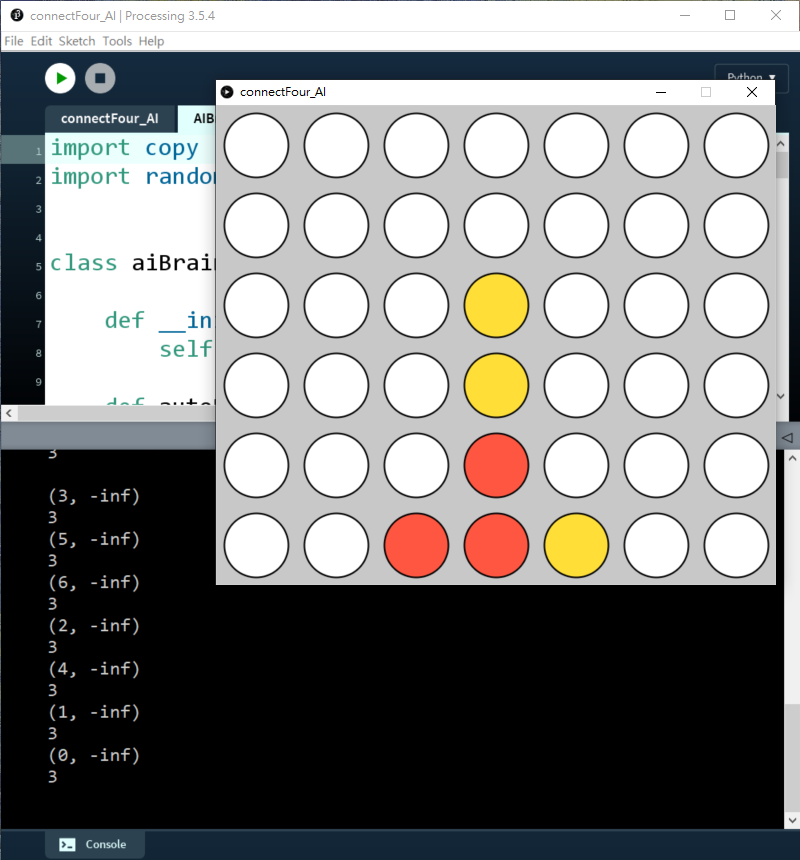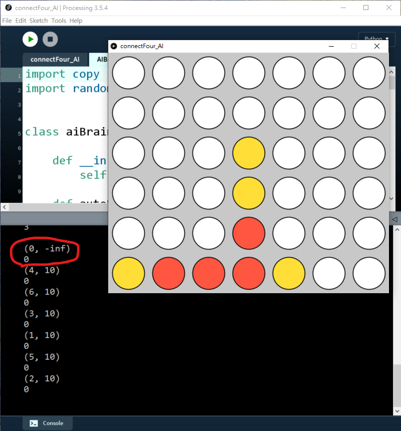
可以見到，如果我落子第2欄(i=1)，AI就會知道我下一步會贏，所以要優先落子第1欄)i=0)
如果進一步將depth = 3:
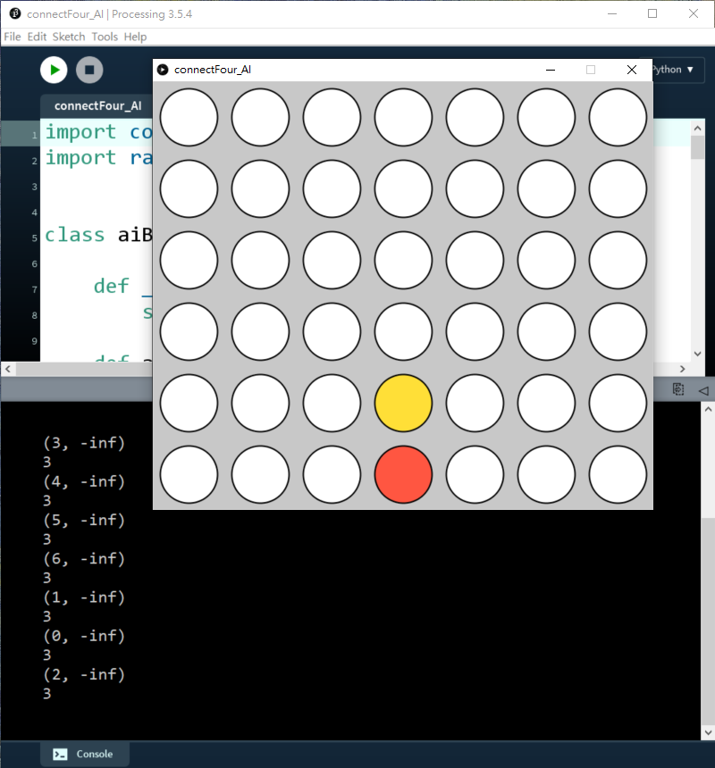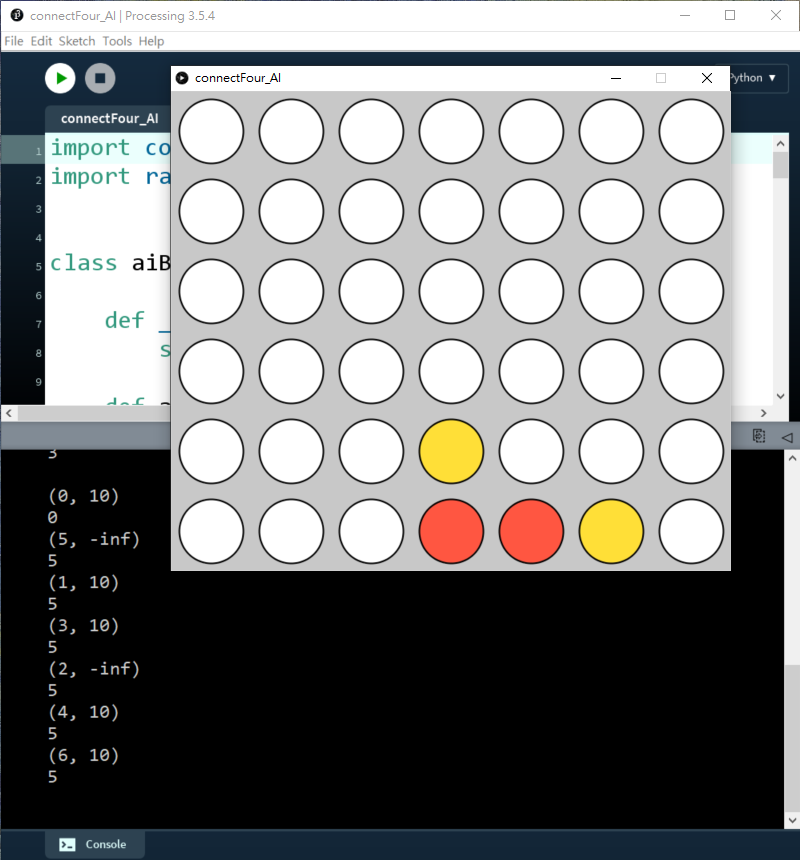
AI甚至懂得防止雙頭蛇，提早在第3欄(i=2)或第6欄(i=6)阻擋我。
上一步的AI之所以不懂阻擋我方，原因是bestScore一開始是設定成負無限大，之後找出最大的bestScore來落子，但我們設定分數時，如果AI方贏的話，分數會是-10分，所以我們找bestScore和bestMove時，找的應該是最小的負數，而不是最大的正數。只要交換，就能正確地令AI懂得防守。
6. 既能阻擋我方，又懂得贏
xxxxxxxxxx811import copy2import random3
4
5class aiBrain(object):6
7 def __init__(self, _gameBoard):8 self.gameBoard = _gameBoard9
10 def autoPlay(self):11 bestScore = float('inf')12 bestMove = random.randint(0, 5) # the range is a, b+113
14 # //fill the available colume to an list15 availableCol = []16 for j in range(7):17 if self.gameBoard.grids[0][j].value == '':18 availableCol.append(j)19 # shuffle the list20 random.shuffle(availableCol)21
22 for move in availableCol:23 possibleBoard = copy.deepcopy(self.gameBoard)24 possibleBoard.trigger(move)25 score = self.minimax(possibleBoard, 1, True)26 print(move, score)27 if (score < bestScore):28 bestScore = score29 bestMove = move30 print(bestMove)31 print('')32 self.gameBoard.trigger(bestMove)33
34 def score(self, _winner):35 if _winner == 'R':36 return 10 37 elif _winner == 'Y':38 return -10 39 elif _winner == 'O':40 return 041 else:42 return 043
44 def minimax(self, _gameBoard, _depth, _isMaximizing):45 winner = _gameBoard.checkWin()46 if winner != None or _depth == 0:47 return self.score(winner)48
49 if _isMaximizing:50 bestScore = 051 # //fill the available colume to an list52 availableCol = []53 for j in range(7):54 if _gameBoard.grids[0][j].value == '':55 availableCol.append(j)56 # shuffle the list57 random.shuffle(availableCol)58
59 for move in availableCol:60 possibleBoard = copy.deepcopy(_gameBoard)61 possibleBoard.trigger(move)62 score = self.minimax(possibleBoard, _depth - 1, False)63 bestScore += score64 return bestScore65
66 else:67 bestScore = 068 # //fill the available colume to an list69 availableCol = []70 for j in range(7):71 if _gameBoard.grids[0][j].value == '':72 availableCol.append(j)73 # shuffle the list74 random.shuffle(availableCol)75
76 for move in availableCol:77 possibleBoard = copy.deepcopy(_gameBoard)78 possibleBoard.trigger(move)79 score = self.minimax(possibleBoard, _depth - 1, True)80 bestScore += score81 return bestScore由於經過了minimax()函數後，如果沒有結果，也會回傳-inf，而在比較最少的時間，所有沒有特定結果的case都會全部變了做-inf，所以AI只懂得防守而不懂得進攻。要改良的話方法很簡單，只要將minimax()入面的bestScore設成0，之後在最後比較bestScore的部分，不做min或max，而是改用將所有結果累加。
當depth=1，AI懂得去阻擋我贏
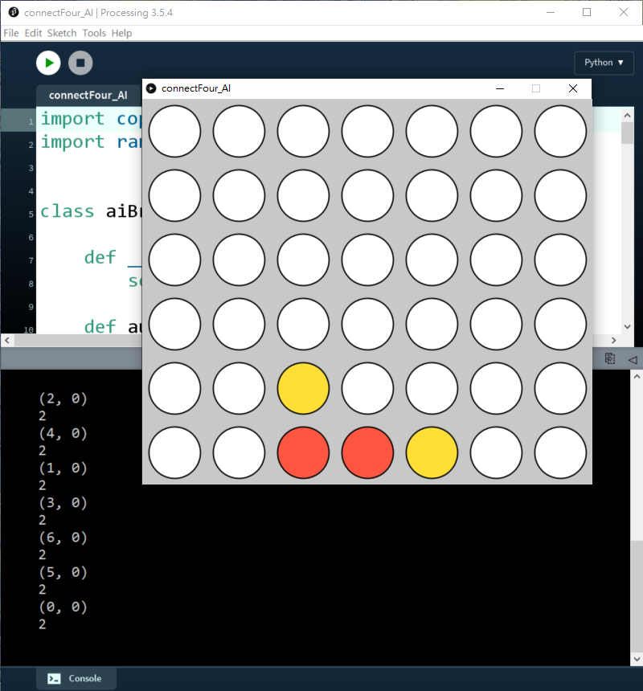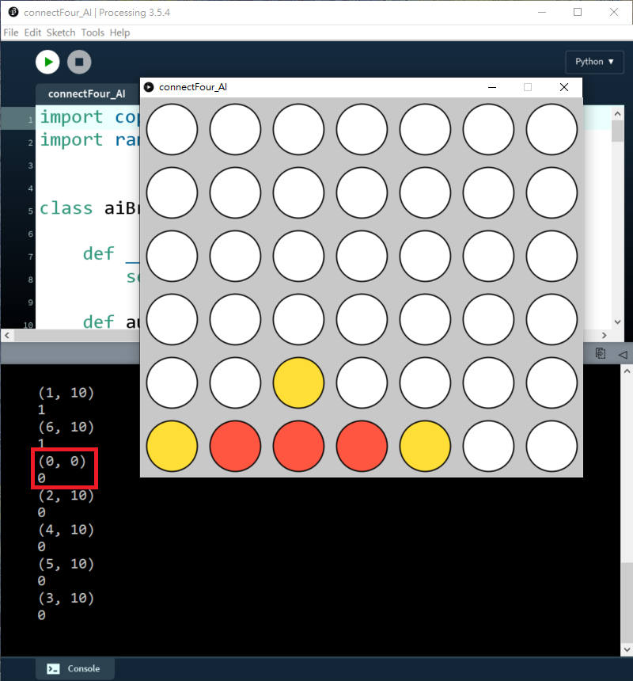
而且也懂得去贏:
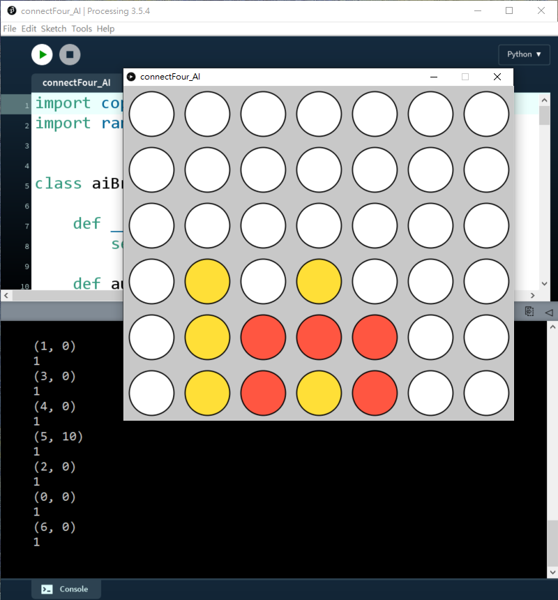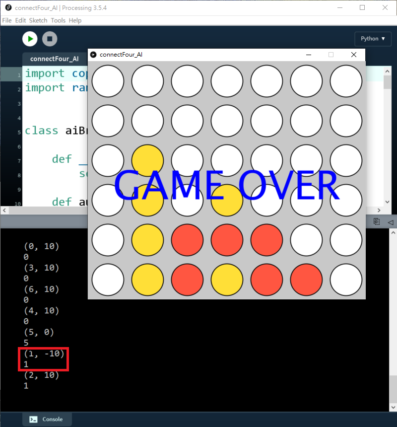
但反而depth=3或以上的話，效果反而一點也不明顯，好似突然變蠢了一樣。如下圖，當depth=3，明明只要下最右手邊的話就會即時贏，AI反而是阻擋我繼續下第三行而不去贏。
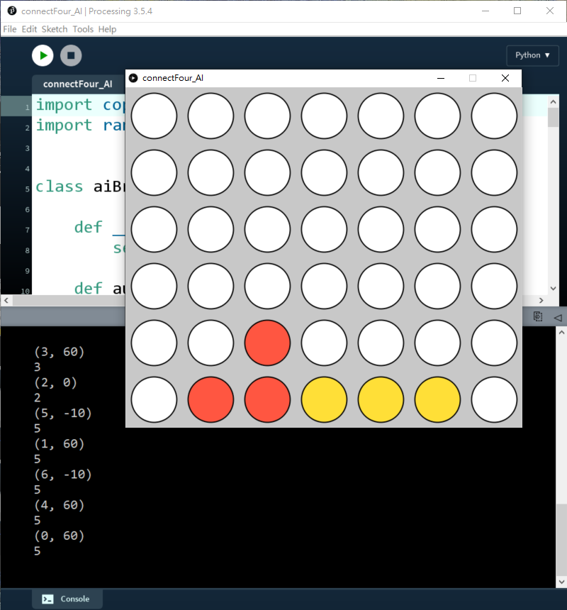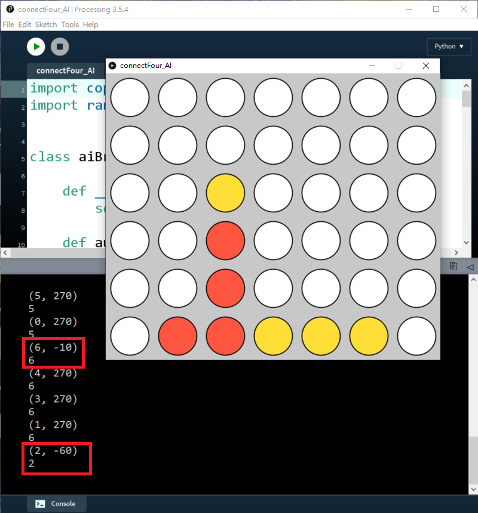
原因是：上述演算法沒有考慮深度的優先，如果下最右手邊(i=6)，遊戲就會即時贏，所以分數只有-10，但如果下第三行(i=2)，由於遊戲未完，演算法會繼續往下兩步(depth=3)，所以會累加之後步的分數，所以反而會比即時贏的分數更少。
普通的minimax演算法，分數是會繼承tree diagram下層的分數，再分min或max，但這樣的方法，如果下一步有即時出現贏或即時輸，它能有效的防守或進攻，但它卻不懂得需要佈局、或走某一步對之後的局面更有利的情況，這是因為minimax演算法缺乏了深度的資訊。例如，minimax對於兩步之後能贏或四步之後才能贏的case，都會給出同等的分數。而我們上面的演算法改了用累加分數，則會累加之後步數，搜尋深度越深分數就會越大。
7. 令分數與depth成關係
xxxxxxxxxx811import copy2import random3
4
5class aiBrain(object):6
7 def __init__(self, _gameBoard):8 self.gameBoard = _gameBoard9
10 def autoPlay(self):11 bestScore = float('inf')12 bestMove = random.randint(0, 5) # the range is a, b+113
14 # //fill the available colume to an list15 availableCol = []16 for j in range(7):17 if self.gameBoard.grids[0][j].value == '':18 availableCol.append(j)19 # shuffle the list20 random.shuffle(availableCol)21
22 for move in availableCol:23 possibleBoard = copy.deepcopy(self.gameBoard)24 possibleBoard.trigger(move)25 score = self.minimax(possibleBoard, 3, True)26 print(move, score)27 if (score < bestScore):28 bestScore = score29 bestMove = move30 print(bestMove)31 print('')32 self.gameBoard.trigger(bestMove)33
34 def score(self, _winner):35 if _winner == 'R':36 return 10 37 elif _winner == 'Y':38 return -10 39 elif _winner == 'O':40 return 041 else:42 return 043
44 def minimax(self, _gameBoard, _depth, _isMaximizing):45 winner = _gameBoard.checkWin()46 if winner != None or _depth == 0:47 return self.score(winner) * (10**_depth)48
49 if _isMaximizing:50 bestScore = 051 # //fill the available colume to an list52 availableCol = []53 for j in range(7):54 if _gameBoard.grids[0][j].value == '':55 availableCol.append(j)56 # shuffle the list57 random.shuffle(availableCol)58
59 for move in availableCol:60 possibleBoard = copy.deepcopy(_gameBoard)61 possibleBoard.trigger(move)62 score = self.minimax(possibleBoard, _depth - 1, False)63 bestScore += score64 return bestScore65
66 else:67 bestScore = 068 # //fill the available colume to an list69 availableCol = []70 for j in range(7):71 if _gameBoard.grids[0][j].value == '':72 availableCol.append(j)73 # shuffle the list74 random.shuffle(availableCol)75
76 for move in availableCol:77 possibleBoard = copy.deepcopy(_gameBoard)78 possibleBoard.trigger(move)79 score = self.minimax(possibleBoard, _depth - 1, True)80 bestScore += score81 return bestScore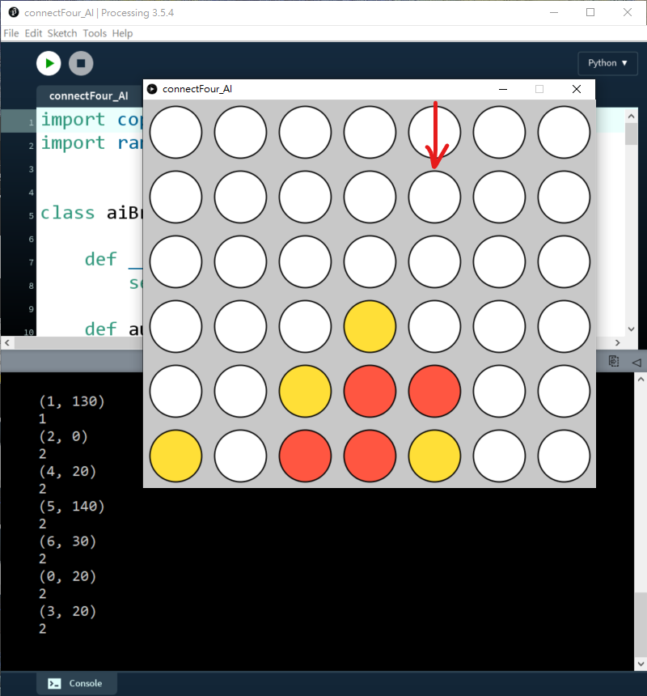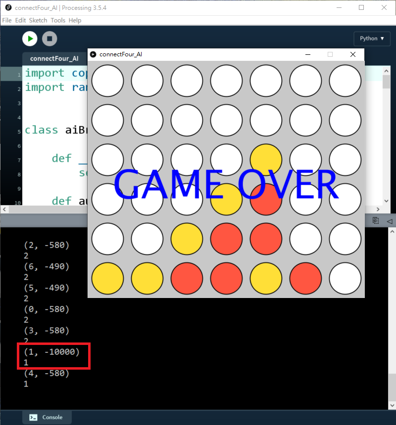
xxxxxxxxxx41 def minimax(self, _gameBoard, _depth, _isMaximizing):2 winner = _gameBoard.checkWin()3 if winner != None or _depth == 0:4 return self.score(winner) * (10**_depth)要改善這情況，方法是將輸出分數跟深度掛勾。將return的分數加了10的depth次方後，輸出分數就與深度成次方比，下一步會即時贏的話，depth=3就會是depth=2時，已經會考慮之後的3步去防守和佈局進攻，如果depth=3時，就會考慮到之後的4步去防守和進攻，已經可以防守和佈置兩頭蛇了。